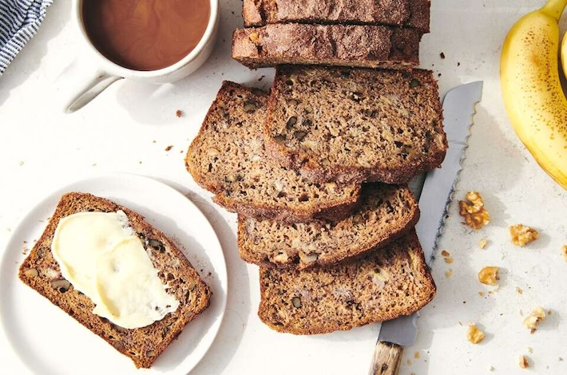

Whole Grain Banana Bread

Description
This one-bowl banana bread uses the simplest ingredients, but is incredible moist and flavorful. While the recipe calls for a 50/50 mixture of flours (all-purpose and whole wheat), you can make it with 100% whole wheat. And honestly? No one can tell, it's that good! And not only is this bread delicious - it's versatile.
Source: King Arthur Baking
Ingredients
Batter
- 2 cups (454g) mashed bananas (about 5 medium)
- 1/2 cup (99g) vegetable oil
- 1 cup (213g) light brown sugar or dark brown sugar, packed
- 2 large eggs
- 1 teaspoon vanilla extract
- 1 cup (120g) all-purpose flour
- 1 cup (113g) white whole wheat flour
- 1 teaspoon baking soda
- 1/2 teaspoon baking powder
- 3/4 teaspoon salt
- 1 teaspoon cinnamon
- 1/2 cup (57g) chopped walnuts, toasted if desired; optional
Tip
Leave the nuts out, if desired; or substitute up to 1 cup chopped dried fruit, chocolate or butterscotch chips, sunflower or pumpkin seeds, or other mix-ins of your choice.
Topping
- 1 tablespoon (13g) granulated sugar
- 1/2 teaspoon cinnamon
Steps
- Preheat the oven to 350˚F (180˚C) with a rack in the center position. Lightly grease a 9" x 5" (23cm x 13cm) loaf pan; if your pan is glass or stoneware, reduce the oven temperature to 325˚F (165˚C).
- In a large bowl, stir together the mashed bananas, oil, sugar, eggs, and vanilla.
- Weigh your flours; or measure them by gently spooning into a cup, the sweeping off any excess. Mix the flours, baking soda, baking powder, salt, cinnamon, and chopped walnuts into the banana mixture. Scrape the bottom and sides of the bowl and mix again to thoroughly combine the ingredients.
- Scoop the batter into the prepared pan. Mix together the sugar and cinnamon, and sprinkle over the batter.
- Bake the bread for about 60 to 75 minutes, until the bread feels set on the top, and a pairing knife (or other thin knife) inserted into the center comes out clean, or with just a few moist crumbs (but no wet batter). If you have a digital thermometer, the bread's temperature at the center should register about 205˚F (96˚C). If the breads appears to be browning too quickly, tent it with aluminum foil for the final 15 to 20 minutes of baking. Note: If baking in a glass or stoneware pan, increase the baking time by 10 to 15 minutes.
- Remove the bread from the oven. Cool it in the pan for 15 minutes, then loosen the edges, and turn it out of the pan onto a rack to cool completely.
- Store leftover bread, tightly wrapped, at room temperature for several days. Freeze for longer storage.